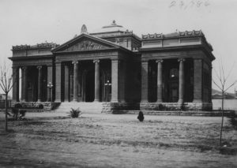
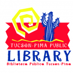
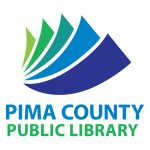
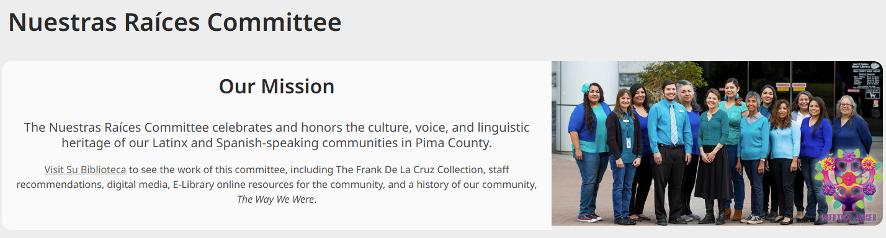
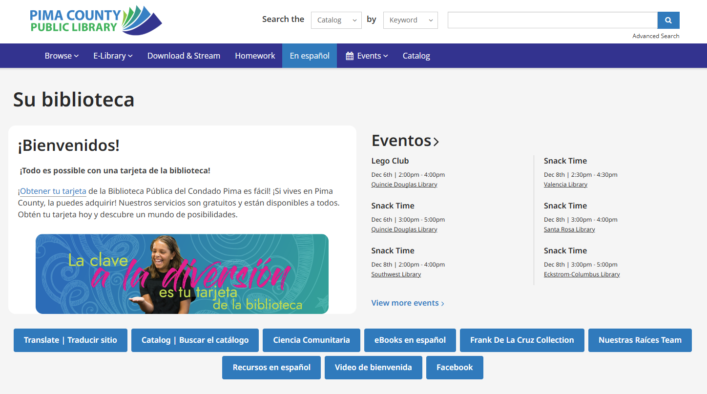

|
|
Quick Facts: Pima County, Arizona was founded in 1864. It is made up of land that was originally acquired from Mexico in the Gadsden Purchase of 1854. The capital of Pima County is Tucson. While the modern city was founded by the Spanish in 1775, various Indigenous peoples have settled in the area since as far back as 2100 B.C. Pima County has a total land area of 9,189 mi² - slightly larger than the state of New Jersey! As of 2022, the total population of Pima County is 1,057,597. Of this, over one million reside in or immediately around Tucson, with the rest living in more rural communities to the West, such as Ajo. Out of Pima County's total population, approximately 38.5% identify themselves as Hispanic or Latino. There is a large Spanish-speaking population, and the Spanish language is frequently heard or encountered alongside English during daily life. It features prominently in childhood education, with most Arizonans being familiar with the language regardless of their ethnic or cultural background. |
Quick Facts: Pima County Public Library has, in one form or another, served the area for over 100 years! While the first library in Tucson opened in 1886 on the 2nd floor of City Hall, Tucson's first dedicated library building was a Carnegie Free Library (See Right) which opened in 1901. The building now serves as the Tucson Children's Museum. The library system has since grown to 27 locations, spread all across Southern Arizona. |
 |
|  |  |
The Joel D. Valdez Main Library (See Left) opened in 1990. It is the headquarters for PCPL and contains the collection development, community engagement, and administrative offices, respectively. The Tucson-Pima Public Library, run by the City of Tucson, was taken over by Pima County in 2006; all public libraries in Pima County have been under one consolidated system, Pima County Public Library, ever since. Having a county-wide library system with a shared catalog in such a large area means that quite a lot of effort goes into the transportation of books to where they are needed. (Images from PCPL) |
PCPL’s En Español web page is a dedicated page of library resources translated and catered to the Spanish speaking community. En Español does not only translate web pages to Spanish. PCPL’s Nuestras Raíces Committee manages and contributes to the page’s content in order to connect Latinx and Spanish speaking patrons to curated library and community resources.
En Español provides navigation to access other systems and resources under PCPL through a Spanish lens and filter. The page offers navigation to dedicated pages with Spanish written books, videos, music, and other resources. Suggested Spanish based selections are featured such as new title additions. Spanish-speaking resources En Español provides includes quick English lessons, general subject tutoring in Spanish, employment training, or even legal and health resources in Spanish.
En Español successfully provides a space for the Latinx and Spanish community dedicated and catered to the intended audience. However, the committee decides relevance and is primarily responsible for maintenance. It is not indicated whether the resources and necessities provided are actually needed by the intended community. A specific group of library staff is not the Pima County community at large. Also when comparing En Español to Nuestras Raíces’ web page, En Español seems dull and disorganized. Nuestras Raíces’ page is more aesthetically pleasing with their organization and use of colors to engage patrons. Many of the resources on Nuestras Raíces’ page are almost identical to En Español but their web page is not as accessible compared to En Español. En Español is not as pleasing to navigate but Nuestras Raíces is harder to find at all.
While En Español was created by a Spanish speaking team, the rest of PCPL’s website is supplemented by Google Translate to allow access regardless of English ability. However, machine translation such as Google focus on literal word translations compared to proper balance of literal and connoted translations done by humans.

Google Translate inconsistently appears on PCPL’s web pages. The most consistent method to access the plug-in is by selecting the “Translate / Traducir sitio” button on the library homepage, which opens a new tab with Google Translate activated. Google Translate supplements library web pages which are not covered by En Español. However, since the software is Google Translate, the function is limited to text within the webpage. Images and other web features are not translated. Since some resources under En Español are only in English, supplementing En Español with Google Translate provides a more covered and comprehensive translation accessibility for Spanish speaking patrons.
PCPL has options to search their catalogs in both English and Spanish. This option is separate from En Español and Google Translate extension. Using the search bar to search with Spanish keywords automatically displays results in translated Spanish. This translation method is built into the catalog’s functions. A patron has the option to search and navigate the catalog in either English or Spanish.
PCPL has an incredibly extensive collection of Spanish translated materials. Unlike typical stereotypes, Spanish translated books available are more than just language lesson materials or stories based in South America. Translated books span across multiple disciplines and topics in fiction and nonfiction. Specifically, it is interesting that the Spanish translated works also include classical and iconic Japanese novels in Spanish translation. Access to these materials is simple and easy for a Spanish based patron as the application for a library card is available in both English and Spanish along with the online application link accessible at the bottom of PCPL’s web pages.
While the robust catalog allows patrons to access various materials in Spanish, it overlooks some groups within the community. Searches in Spanish are only limited to materials in Spanish. The search limitations imply assumptions that Spanish speaking patrons only wish for Spanish only materials. The Latinx community includes not only Spanish speakers but also English speaking Latinx or those wishing to improve their English through library resources. Limiting the searches also limits the communities’ access to materials.
We evaluated the Pima County Library based on the ALA’s Guidelines for Library Services to Spanish-Speaking Library Users, concentrating on the guidelines that were applicable to the library website.
Analysis is featured in italics.
| 1.3 - Bibliographic Access | 1.3.1 - Bibliographic access to the library's collection should include Spanish-language subject headings in the public catalog to facilitate the location of Spanish-language and bilingual materials. Also provide any locally produced access and identification aids, including lists, bibliographies, and point-of-use bibliographic instructional materials in Spanish. The library catalog is available in Spanish. Searching in Spanish works but only brings up books in Spanish or in both English and Spanish. The catalog does have separate English and Spanish subject listings, they show one after the other in the catalog search filters. This is a weakness in the system for those who might wish to search in Spanish but find English language options. Otherwise, the catalog is well translated, even in sub-menus for filtering search results. |
| 2.3 - Outreach Services | 2.3.1 - Continually assess and analyze the community in order to aid in the planning and delivery of library services to meet community needs. Further these aims by: participating in the work of local community organizations that serve the Spanish-speaking; establishing partnerships with such organizations in the development and presentation of library programs and services; using local radio and cable programs, public service announcements, newspapers and regional Internet providers as a means of communicating with the targeted populations. The Nuestras Raíces committee allows the library to not just have Spanish translation as a check in the box, but to ensure their offerings are meeting the needs of their community. They tailor specific events for Spanish speakers, advertising them in Spanish on the website. The committee has specific Facebook and Instagram pages that allow for public outreach. They also provide links to various Spanish language resources, for example: immigration, health, and education. Some are Arizona based, while others are more general. |
| 2.6 - Electronic resources | 2.6.1 - Provide the target community with access to and training in the use of electronic resources, including full-text databases, online resources, and Internet access. The library provides multiple Spanish language resources for learning these skills. One example is their link to the Spanish version of GCFGlobal.org, a free website that covers over 200 topics including basic technology, vocational training, and English. This website is available in English and Spanish. 2.6.1.1 - Provide bi-lingual written policies for access to public terminals with Internet connection. 12 out of 14 public policies available on the website are available in both Spanish and English. Their Computer and WiFi use Agreement is available in Spanish. 2.6.2 - Provide access to, and bilingual training in, the use of electronic resources to Spanish-speaking communities. 2.6.2.1 - Provide access to digital format, Spanish-language, government publications when available. Provision of access to electronic resources in all formats is an especially important service that must be provided to users who may have had limited experience in the use of computer technology. The library has a large array of community resources available. Any of the Pima County links go to their webpage, which can be translated via google translate. Unfortunately, the county does not provide their forms in translation. |
| 4.5 - Access | 4.5.1 - Create bilingual or Spanish translations of library literature that assist in accessing the library and its collections. Examples include: welcome brochures, library maps, guides to using the library, and lists of library resources. Allow Spanish-speaking users to provide input before materials are disseminated. Distribute this library literature to local organizations that serve the Spanish-speaking in your community. Pima County Public Library generally provides most of its resources, whether physical or online, in a bilingual format. In terms of physical resources, this includes library maps as well as posters and brochures. Online, events that are posted generally feature parallel descriptions in English and Spanish, especially if they are hosted at branches that service a large Hispanic community. |
In addition, we briefly evaluated the Spanish-language accessibility of library systems in other areas with sizable Hispanic and Latino populations:
| Los Angeles Public Library | Utilizes a En Español button to take users to a spanish translation of the main webpage with specialized spanish language book recommendations. They do not use an embedded Google translator, and this does leave parts of the website in English. |
| Nogales Public Library | Relies on Santa Cruz County website (English). Utilizes Google Translate but does not have any internally translated pages. Many library resource links are outside of the main webpage and and open in English. |
| San Diego Public Library | Translates via embedded Google Translate. Translates text only. |
| Miami-Dade Public Library | Relies on embedded Google Translate for Spanish and Haitian Creole. Same as San Diego - translates text, not images. |
Usability testing with target audience
While the Nuestras Raíces committee is doing a wonderful job, they could take their offerings to the next level if they conducted usability testing and surveys with their target audience.
En Español webpage aesthetics
We found Nuestras Raíces page to be more colorful and engaging than the rest of the En Español. We would recommend they put equal effort into making all of the Spanish language pages as aesthetically pleasing, to make them feel equally valued.
Ensure consistent Spanish-translated pages accessible via En Español
While browsing the En Español pages we found the Frank De La Cruz Collection page with community notes about Frank De La Cruz was almost entirely in English.
Address inconsistencies in the catalog search
Spanish speakers should be able to search in Spanish and get results in English. For example, a parent who speaks Spanish may wish to find books for their child in English. The current catalog does not provide that functionality.
While we found things that we would change, overall, PCPL is doing a phenomenal job making their website and library ALA compliant. When compared to other libraries in the United States which host large Spanish speaking populations, such as Miami-Dade, Los Angeles, San Diego, and Nogales libraries, Pima County is out-performing them in almost all regards. This is most likely down to the Nuestras Raíces committee pushing the library to serve it’s population both online and in person.
While Google translate is a cost effective method to add translation to a website, it is never going to be as good as human derived translation and purposeful language inclusion. It will lack nuance and cannot translate inside of graphics. And while there are other translation services in existence, Google translation is going to be what fits into public library budgets.
Our recommendation is a mixture of both human and google translation for libraries who can afford to hire multi-lingual staff. While we think a fully human translated website and catalog would be the best option, we acknowledge this is not the most realistic option in terms of cost and efficiency.
ALA | Guidelines for Library Services to Spanish-Speaking Library Users. (n.d.).
All images are from PCPL or screenshots of the PCPL website, unless specified.